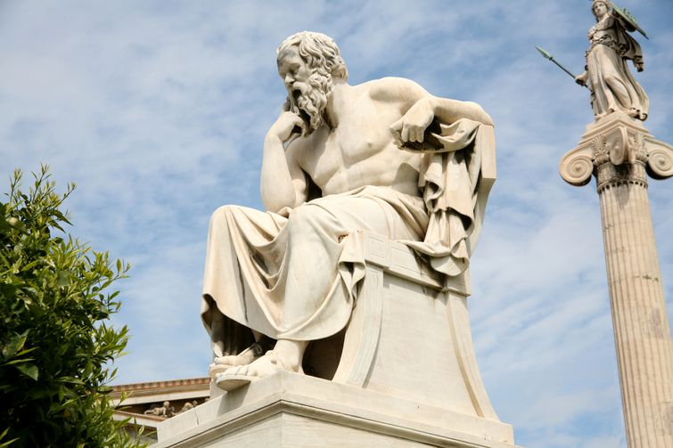

Welcome to the Mathematical World!
Socrates
Ancient Greek Philosopher and Founder of Western Philosophy
Socrates (c. 470 – 399 BCE) is often regarded as the father of Western philosophy and one of the most influential thinkers in history. Born in Athens during its Golden Age, he lived through the city’s rise and fall in the Peloponnesian War. Socrates came from humble origins, working as a stonemason in his early life, yet devoted himself to the pursuit of wisdom and the examination of human life. He did not write any works himself; most of what we know about him comes from his students, especially Plato, and from other contemporaries such as Xenophon and the playwright Aristophanes.
The Socratic Method
Socrates developed the Socratic Method, a way of teaching through questioning and dialogue. This method involved asking a series of probing questions to expose contradictions in a person’s beliefs, encouraging them to think more clearly and logically. By leading his interlocutors to examine their own ideas, Socrates sought to uncover definitions of abstract concepts such as justice, virtue, courage, and piety.
- Encouraged critical thinking and self-examination.
- Exposed assumptions and inconsistencies in arguments.
- Promoted dialogue as a means to discover truth.
He believed that the pursuit of virtue and wisdom was more important than wealth or power, famously declaring that “the unexamined life is not worth living.”
Focus on Ethics and Virtue
Socrates was less concerned with natural science than many earlier Greek thinkers, focusing instead on how people should live and what it means to live a good life. He believed that knowledge and virtue were inseparable — that to truly know what is right is to do what is right. This moral philosophy formed the ethical foundation for much of Western thought.
- Virtue is the highest good.
- Ignorance is the root of wrongdoing.
- Wisdom begins with recognizing one’s own ignorance.
Trial and Death
In 399 BCE, Socrates was put on trial in Athens on charges of impiety and “corrupting the youth” by encouraging them to question traditional beliefs and authority. Found guilty by a narrow margin, he was sentenced to death by drinking poison hemlock. Rejecting the chance to escape, Socrates accepted his fate, choosing to uphold his principles and obey the law even at the cost of his life.
- Faced trial before a jury of 500 Athenians.
- Defended his mission as a moral duty to question and seek truth.
- Died calmly, discussing philosophy until the final moments.
His death became a symbol of intellectual integrity and courage in the face of injustice.
Legacy and Influence
Socrates’ life and ideas profoundly shaped the development of philosophy. Through the works of Plato and Aristotle, his methods and teachings influenced countless generations of thinkers. The Socratic Method remains a cornerstone of philosophical inquiry, legal education, and debate. His emphasis on reason, ethics, and dialogue helped lay the foundations for Western intellectual tradition.
- Plato (his most famous student)
- Aristotle
- Stoic and Cynic philosophers
- Modern educational and legal questioning techniques
Socrates’ true importance lies not in any single doctrine but in his way of seeking knowledge — through relentless questioning, logical reasoning, and the belief that truth can be discovered through human inquiry.